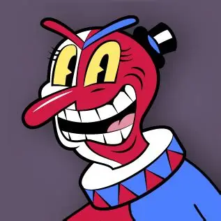
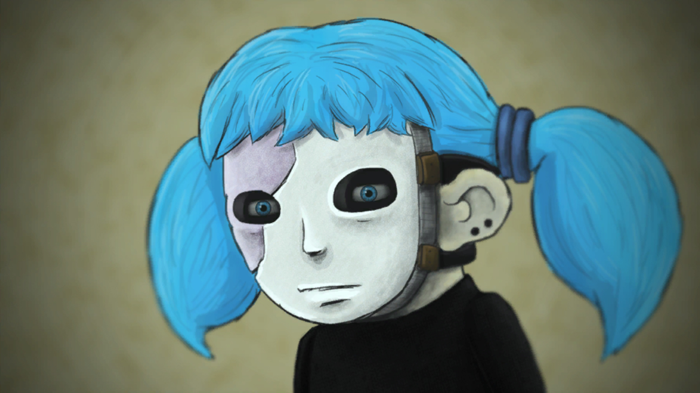

Experiências únicas criadas por desenvolvedores independentes.
O que é indie?
Em um cenário dominado por gigantes do entretenimento, onde os jogos de alto orçamento priorizam o lucro e a segurança da fórmula, surge o universo dos jogos Indie: uma verdadeira força de inovação. A palavra "Indie" é a abreviação de Independente, esses jogos são criados por pequenas equipes ou, às vezes, por um único desenvolvedor, sem o suporte financeiro de grandes empresas publicadoras.
Essa liberdade criativa se traduz em títulos que frequentemente exploram narrativas complexas, estilos de arte ousados e mecânicas de jogo totalmente originais, que as grandes corporações relutariam em arriscar. Jogos Indie não apenas buscam vender milhões de cópias; eles buscam emocionar, desafiar e inovar. Eles são a prova de que a paixão e a visão artística podem superar orçamentos bilionários, entregando experiências profundamente pessoais e inesquecíveis. Mergulhar no universo Indie é buscar a essência mais pura do desenvolvimento de jogos.
Meu top 5 jogos indie:
Hollow Knight
Clique para ver
Cuphead
Clique para ver
Celeste
Clique para ver
Sally Face
Clique para ver
Hotline Miami
Clique para ver
Hollow Knight
Gênero: Metroidvania / Plataforma de Ação.
Você assume o papel do "Pequeno Cavaleiro" em uma jornada por Hallownest, um reino de insetos em ruínas assolado por uma praga misteriosa.
O jogo é aclamado por sua atmosfera melancólica, combate extremamente fluido e um nível de dificuldade desafiador que recompensa a persistência.
O Que Atrai Fãs de Lógica: Exploração como um Quebra-Cabeça Espacial em Camadas
A genialidade de Hollow Knight reside em transformar sua vasta arquitetura em um enorme quebra-cabeça de exploração. A cada nova habilidade (como um pulo duplo, um dash sombrio, ou um ataque especial),
o jogador deve exercitar a dedução topológica. É preciso revisitar áreas antigas, raciocinar onde o novo poder pode quebrar um obstáculo ou abrir uma passagem oculta, e mapear mentalmente a sequência lógica de progressão.
A descoberta de segredos não é acidental, mas sim o resultado de um raciocínio espacial e de memória bem-sucedidos.
Status: Lançado. Silksong não é apenas um DLC, mas uma sequência completa e independente. O foco muda para a personagem Hornet em um reino totalmente novo, introduzindo um estilo de combate mais ágil e mecânicas de crafting. O projeto cresceu tanto em escopo que exigiu se tornar um jogo novo, e é um dos títulos mais aguardados de toda a comunidade gamer indie.
A equipe central é composta por três pessoas:
Ari Gibson (Artista e Designer de Co-Direção)
William Pellen (Designer e Programador de Co-Direção)
Leth (Matthew Griffin) (Marketing e Suporte, geralmente não envolvido diretamente na codificação ou arte, mas essencial para a comunicação com a comunidade).
Para o desenvolvimento do primeiro Hollow Knight, eles trabalharam com um compositor de música (Christopher Larkin) e um designer de som externo.
Cuphead

Gênero: Run and Gun / Boss Rush.
Um jogo de ação 2D focado em batalhas intensas contra chefes. Seu grande diferencial é o visual, totalmente desenhado e animado à mão no estilo vibrante e frenético dos desenhos animados da década de 1930, tornando-o uma obra de arte animada jogável.
O Que Atrai Fãs de Lógica: Decifrando o Algoritmo de Ataques do Chefe
Em Cuphead, a vitória raramente vem da força bruta. Ela é conquistada através de observação, lógica sequencial e memória. Cada um dos chefes massivos é um complexo enigma de padrões de ataque. O jogador deve identificar a ordem exata das investidas, as janelas de oportunidade e as rotas de fuga. O desafio é decifrar o algoritmo do chefe e, em seguida, executar a estratégia perfeita no timing preciso. É o raciocínio lógico aplicado diretamente à ação de alta velocidade.
Continuação Anunciada: Não, mas tem uma grande expansão.
Status: O Studio MDHR lançou a aclamada expansão The Delicious Last Course (DLC) em 2022, que concluiu as aventuras originais. Embora não haja um Cuphead 2 oficial, o estúdio já manifestou interesse em continuar explorando o universo de animação 2D e foi visto contratando desenvolvedores para um "novo projeto" com foco em ação, sugerindo que uma sequência ou um sucessor espiritual pode estar em desenvolvimento inicial.
O número da equipe de desenvolvimento principal (responsável pela arte, design e programação) é de aproximadamente 12 a 20 pessoas.
Os fundadores e o coração criativo do Studio MDHR são os irmãos:
Chad Moldenhauer (Diretor de Arte)
Jared Moldenhauer (Designer Principal)
Inicialmente, eles contaram apenas com a ajuda de familiares (como Marija Moldenhauer) e alguns programadores, mas o time se expandiu para incluir mais artistas, animadores e programadores para conseguir finalizar o nível de detalhe do jogo.
Celeste
Gênero: Plataforma de Precisão. Acompanha Madeline em sua tentativa de escalar a traiçoeira Montanha Celeste. O jogo é conhecido mundialmente por seus controles ultra-precisos, centenas de desafios de plataforma que exigem timing e uma narrativa madura que aborda temas de ansiedade, depressão e autoaceitação.
O Que Atrai Fãs de Lógica: A Modelagem da Execução Perfeita
Cada tela de Celeste é, essencialmente, um puzzle de diagrama lógico e mecânico. O sucesso não depende de reflexos brutos, mas da capacidade de planejar uma sequência de movimentos exata (saltos, dashes e escaladas) que anulem os perigos. O jogador precisa modelar mentalmente a solução, identificando os elementos interativos e a ordem dos passos, e depois buscar a execução precisa desse algoritmo. É um exercício de disciplina mental, onde cada erro ensina o caminho para a solução correta.
Continuação Anunciada: Não.
Status: O criador de Celeste declarou que a história principal de Madeline foi concluída com o lançamento do Capítulo 9: Farewell. O estúdio (Extremely OK Games) estava trabalhando em um novo projeto (Earthblade) que não seria uma sequência, mas infelizmente este foi cancelado. Atualmente, a equipe trabalha em novos conceitos, mas sem planos públicos para um Celeste 2.
A equipe essencial por trás de Celeste é composta por:
2 Desenvolvedores principais:
Maddy Thorson (Diretora de Criação e Design Principal)
Noel Berry (Programador Principal)
Colaboradores principais:
Lena Raine (Compositora da aclamada trilha sonora)
Amora B. (Artista Principal)
Sally Face

Gênero: Puzzle / Horror Psicológico. Você segue Sal Fisher, um adolescente que usa uma prótese facial, enquanto ele e seus amigos investigam mistérios sombrios e eventos sobrenaturais em seu complexo de apartamentos. O jogo se desenrola em um formato episódico, focando em uma profunda narrativa de mistério e horror.
O Que Atrai Fãs de Lógica: Dedução Criminosa, Conexão de Pistas Narrativas.
Sally Face é o mais puro jogo de investigação e dedução desta lista. O jogador deve conversar com vizinhos, usar itens de forma criativa e aplicar a lógica para desvendar os enigmas do enredo principal. A vitória depende da sua capacidade de juntar fragmentos de informação, filtrar fatos de superstições e conectar as pontas soltas da trama. É um exercício constante de raciocínio narrativo, onde cada pista é uma peça crucial no quebra-cabeça do mistério sobrenatural.
Continuação Anunciada: Sim, Sally Face 2.
Status: O criador solo, Steve Gabry, confirmou que está trabalhando ativamente na sequência. O jogo tem previsão de continuar a narrativa após o final dramático do primeiro, explorando os mistérios e as consequências das ações de Sal Fisher. Embora o desenvolvimento seja lento por ser um projeto solo, ele é altamente antecipado pela base de fãs que deseja ver a conclusão da história.
Sally Face foi um projeto Solo (1 Pessoa)
O jogo foi criado quase inteiramente por uma única pessoa, Steve Gabry, sob o nome do seu estúdio independente, Portable Moose.
Steve Gabry é o responsável por:
Arte: Desenho dos personagens e cenários.
Design: Design de níveis, quebra-cabeças e jogabilidade.
Música: Composição e produção de grande parte da trilha sonora.
Roteiro: Criação da narrativa complexa e episódica.
Programação: A maior parte da implementação do código.
Hotline Miami
Gênero: Ação Tática Top-Down (Visão de Cima). Extremamente estilizado e brutal, o jogo exige que o jogador entre em edifícios e elimine todos os inimigos rapidamente, muitas vezes morrendo com um único golpe. É famoso por sua estética neon, trilha sonora eletrônica pulsante e subversão da narrativa de violência.
O Que Atrai Fãs de Lógica: A Matriz de Otimização Tática
Este não é um jogo de atirar e correr, mas um puzzle de tática e otimização em tempo real. A fragilidade do protagonista força o jogador a planejar a rota de abate ideal antes de dar o primeiro passo. Você precisa calcular a ordem em que os inimigos devem ser eliminados, qual arma é a mais eficiente e o timing de cada movimento. A cada reinício após a morte (que é instantânea), o jogador aplica as lições aprendidas e refina sua solução, transformando cada fase em uma complexa matriz lógica a ser otimizada para o ranking perfeito.
Continuação Anunciada: Sim, e já foi lançada.
Status: O jogo Hotline Miami 2: Wrong Number foi lançado em 2015 e concluiu a história da série. A sequência expandiu a narrativa, introduzindo múltiplas facções e protagonistas jogáveis. O segundo jogo é considerado o final da saga principal, aprofundando os temas de violência, moralidade e as consequências dos eventos do primeiro jogo. Não há planos ou anúncios de um terceiro título na série.
O núcleo da Dennaton Games é composto por apenas duas pessoas:
Jonatan Söderström (Programação e Design)
Dennis Wedin (Arte e Design)
O nome "Dennaton" é uma combinação dos nomes deles: Dennis e Jonatan.
Eles também contaram com colaboradores essenciais, como:
Vários Músicos Independentes: A trilha sonora icônica foi uma compilação de músicas eletrônicas e synthwave de vários artistas talentosos (como M.O.O.N., Perturbator, Jasper Byrne e Scattle), que foram licenciadas ou comissionadas, e não de um único compositor exclusivo, como em Hollow Knight ou Celeste.

.webp)
.jpeg)